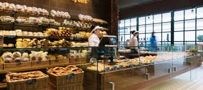
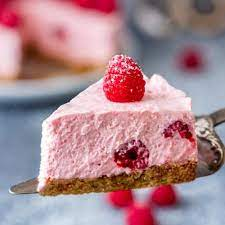
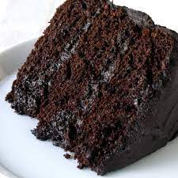
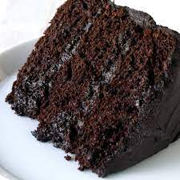
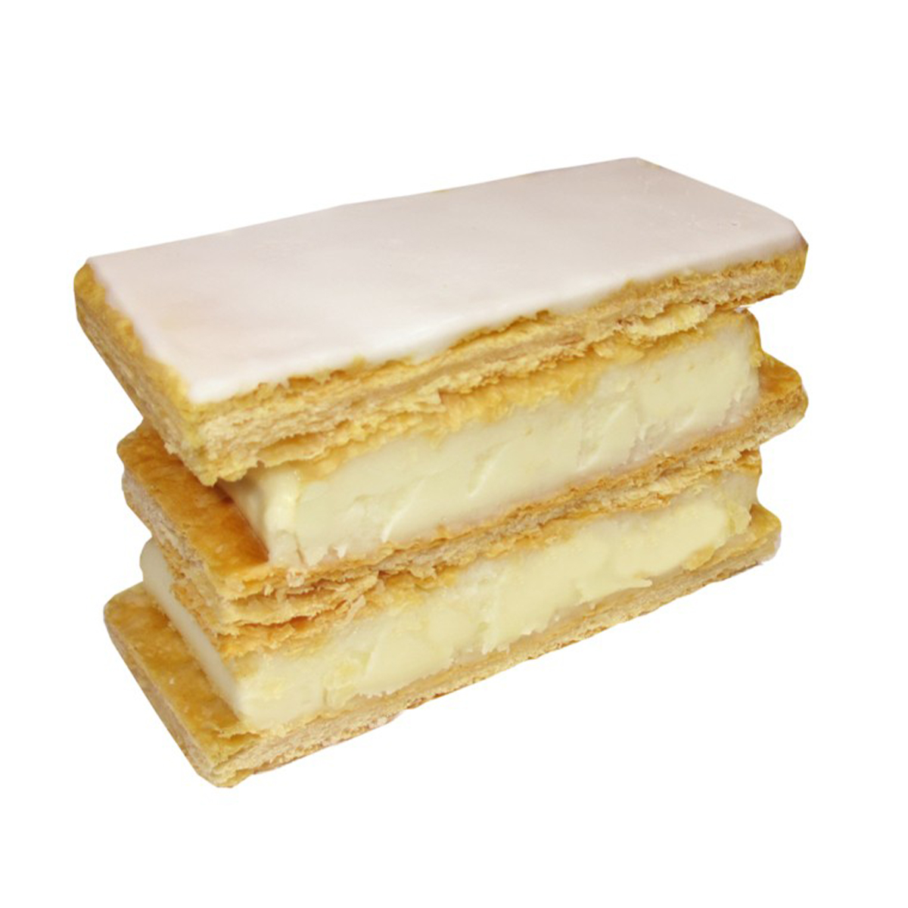
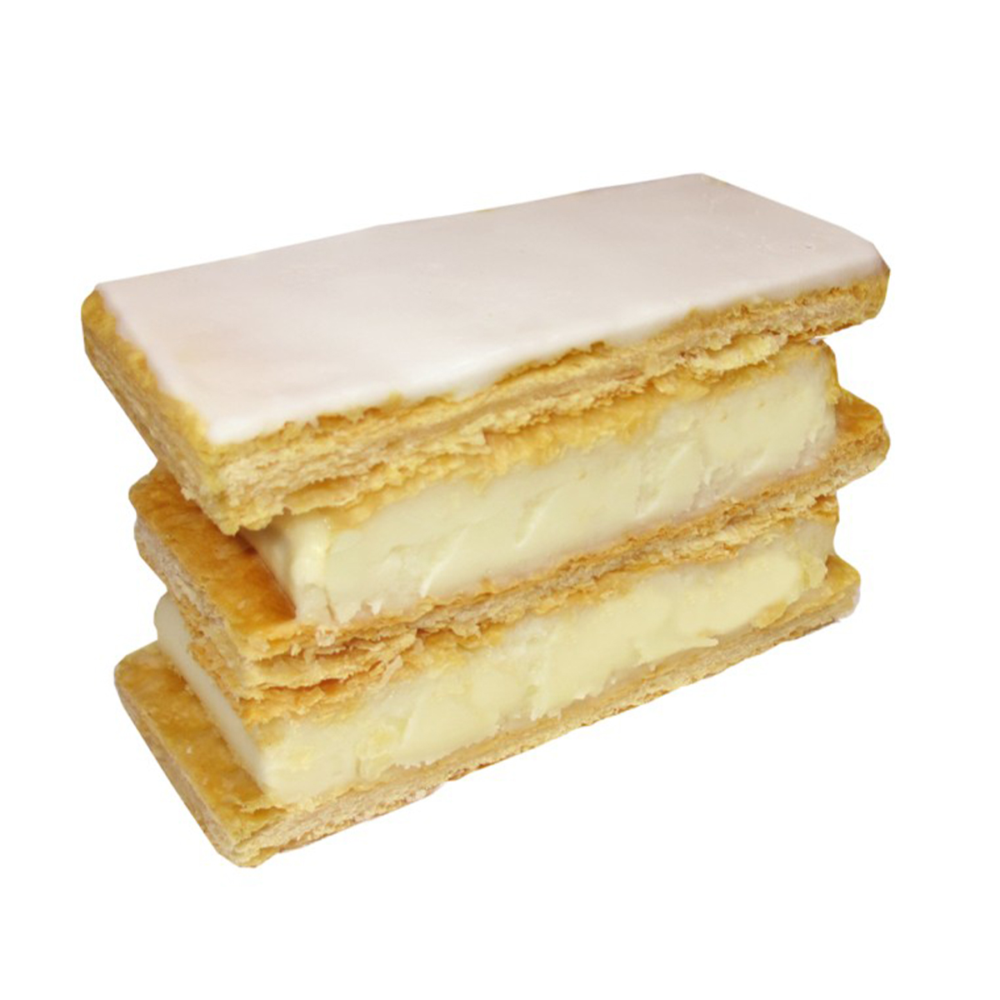
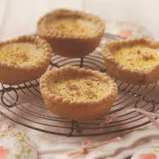
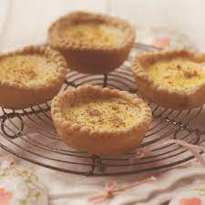
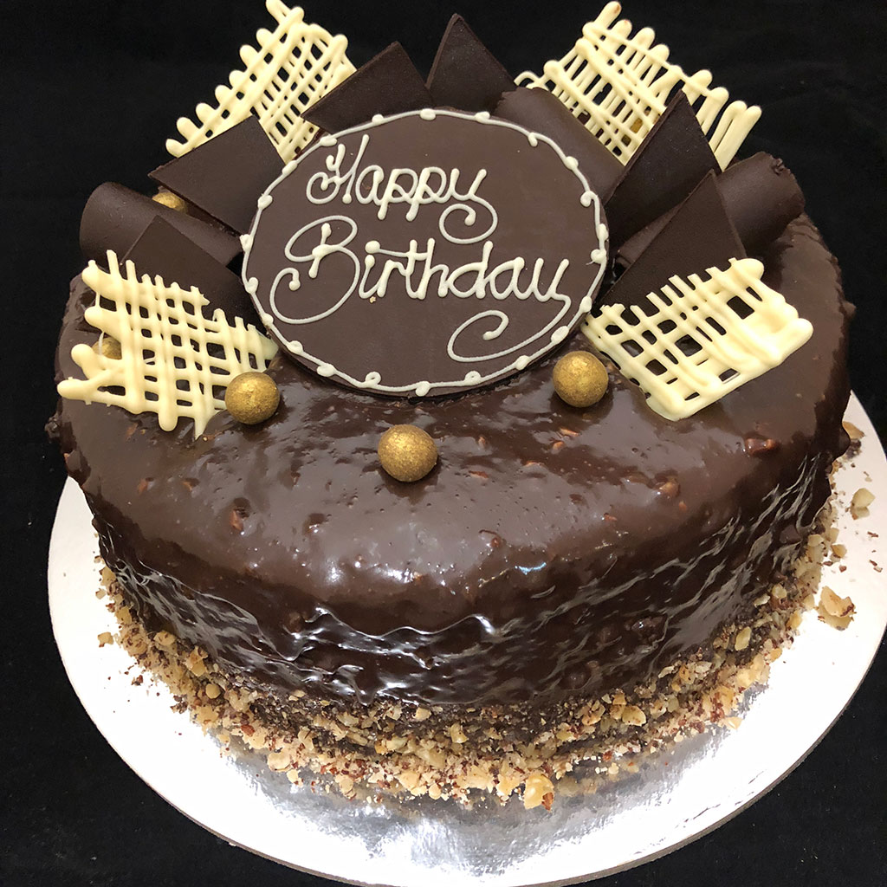

Attract more and more people to Petite Treats, especially young people.
The page will be designed with bright colors, bright tone, making it suit for young people.
Making Petite Treats more well-known by people in the area.
Increase the brand awareness of this bakery by having an official website.
We also want to show some sample images of the products to be displayed to attract the site visitors attention. We want our customers to be able to sign up for weekly specials! We think there should be a page for our weekly specials to further attract customers.
Young families and young people around the age 17-35.
People who live in Kirwan area, Queensland
We are a small family-run local business, operating in Kirwan since 2012, hoping to improve our business by getting on the Internet. Our bakery is located at 123 Prize Lane in Kirwan, Queensland. We specialise in traditional Australian baked goods.
The products we would like to showcase are:
Footer information:
Below are the two developed pages which is Homepage and Menu page


The home page will have image of products that have been made in the bakery and some content on the bakery.

We are Petite Treats, a family-run baker in Kirwan. We have 9 years of experience in making and selling the high quality cakes, cupcakes, muffins, deserts and cookies. All of our products are freshly made everyday with fresh ingredients. Cake is one type of popular food that normally used in several events, such as birthday parties, wedding ceremonies, festivals celebrations, and farewell parties. Thus, the founders of Petite Treats Bakery believe that every products is ‘telling a unique story about the event’ and ‘representing the best wishes from the sender’.
It will have a feed back image and some feedback content.
It will have ingriendents
Our ingredients are taken from Kiwarn - a famous farm in queensland. We select the best chicken eggs, cow milk and flour then turn them to cakes, cupcakes, muffins and cookies. We do not use any other additives in baking as we care for our customer health.
It will have contact information and links to each webpage
Contact: 0455 5555 555 | Catering: 0433 3333 333 | Address: 123 Prize Lane, Kirwan, QLD .
The aboutme page will have about us image and some content on the bakery
Break news for our dear customers: We are opening a new branch, located in Willows Shopping Centre, our baker is an artisan-baker and was trained in Paris. We believe you will be satisfied with his cakes, cupcakes, muffins and cookies.
Current Customers
It will have contact information and links to each webpage
Contact: 0455 5555 555 | Catering: 0433 3333 333 | Address: 123 Prize Lane, Kirwan, QLD .
The meu page will have theses images of Raspberry Cheesecake, Apple Cake Slice, Chocolate Cake, Cheese Slice, Donuts,Vanilla Slice, Randy Tart and Custard Tarts
 


 

 

Prices for each image is below:
It will have contact information and links to each webpage
Contact: 0455 5555 555 | Catering: 0433 3333 333 | Address: 123 Prize Lane, Kirwan, QLD .
The special page will have these images of cupcakes, birthday cakes, muffins and cookies.


It will have contact information and links to each webpage
Contact: 0455 5555 555 | Catering: 0433 3333 333 | Address: 123 Prize Lane, Kirwan, QLD .
The signup page is a newsletter page that will be created with java script to make a form for the newsletter page.
it will have contact information and links to each webpage
Contact: 0455 5555 555 | Catering: 0433 3333 333 | Address: 123 Prize Lane, Kirwan, QLD .
The plan has been updated with the following:
The usability test plan has the following questions that is used for user testing.